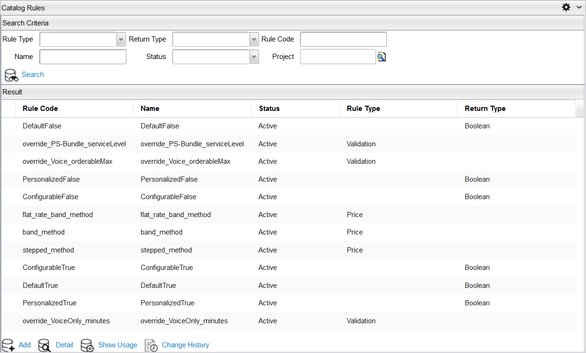

To open the Catalog Rules page, click Designer > Catalog Rules from the menu bar . This page provides a centralized view of all catalog rules in the Result area. Both the rule name and its label appear on this page.

The Catalog Rules page has the following buttons:
| Button | Description |
|---|---|
| Search | In the Search Criteria area, enter your search criteria in the Rule Type, Return Type, Rule Code, Name, Status or Project fields and then click the Search button to view your search results. |
| Add | Click this button to launch the Catalog Rules Detail page, where you can create a new catalog rule. |
| Delete | You can delete a catalog rule by highlighting the rule in the Result area and then clicking this button. |
| Detail | Highlight the rule you want to edit and then click the Detail button to launch the Catalog Rule Detail page, where you can make changes to your rule. |
| Show Usage | Click the Show Usage button to perform a search that displays objects containing the selected rule within the catalog. |
| Change History | Highlight the rule you want and then click the Change History button to view all revisions made to the selected rule. |